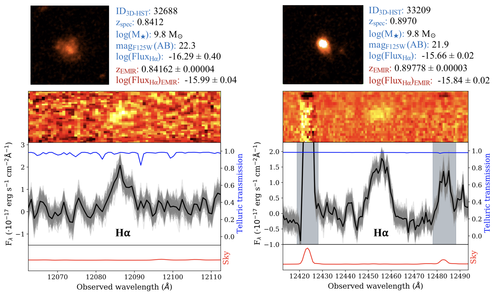
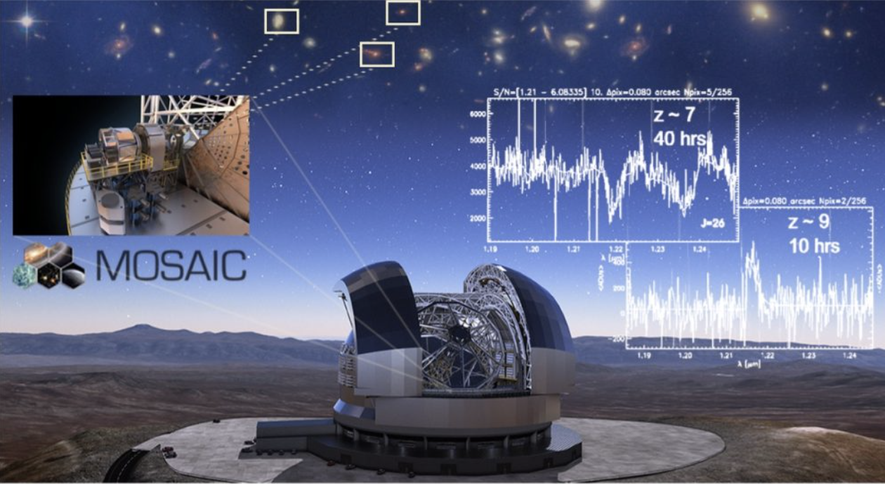
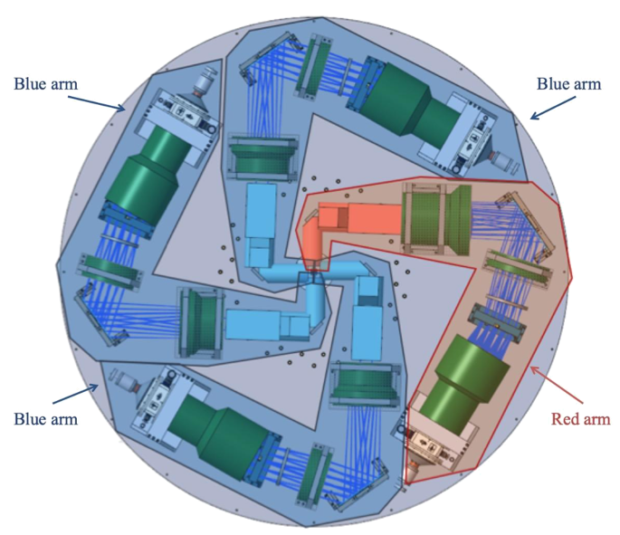

CIRCE@GTC data exploitation in the search for the first galaxies
Cabello et al. 2022, A&A 659, A116

In this project, we studied the feasibility of detecting Lyman-α Emitters (LAEs) at z = 9.3 using the near-IR camera CIRCE at the 10.4 m Gran Telescopio Canarias (GTC). We carried out the narrow-band (NB) Lyα survey at the highest redshift ever, for which the ALBA team designed a narrow-band filter (hereafter NB1257) with FWHM = 11nm and centered at 1257 nm that was manufactured by SCHOTT. As a result of the observations, we obtained a near-IR image of 18.3 hours which covers an area of ∼7 arcmin2 within the Extended Groth Strip (EGS) cosmological field. After the source detection, no robust LAE candidate was selected down to an emission-line flux of 2.9 × 10−16 erg s−1 cm−2. We derived however an observational constraint of the Lyα luminosity function at z ∼ 9 that agrees well with the previous constraints. While the current NB surveys at very high redshift probe only the most luminous rare sources, wider and deeper observations are needed to address the scientific challenge of detecting the first galaxies of the Universe.
⇨ See also C. Cabello — 2023, PhD Thesis — Universidad Complutense de Madrid (UCM).
GOYA survey of the high-redshift Universe using EMIR@GTC
On the properties, origin and evolution of Low-Mass Star-Forming Galaxies (LMSFGs)
The Galaxy Origins and Young Assembly (GOYA) team focuses on the study of the high-redshift Universe using the near-infrared EMIR instrument at the 10.4 m Gran Telescopio Canarias (GTC). This survey encompasses several scientific projects such as the identification of galaxies at the Epoch of Reionization (z > 6), and the study of HII galaxies (0.4 < z < 4.0), massive quiescent galaxies (0.9 < z < 2.5), and low-mass star-forming galaxies (0.7 < z < 1.5). In this work, we particularly aim to make some light on the physical properties, formation redshift, and cosmic role of dwarf galaxies. During the Guarantee Time observations, we have been exploring the Extended Groth Strip (EGS) field in the J and H band, testing the capabilities of the MultiObject Spectroscopic (MOS) mode of EMIR.
⇨ See also C. Cabello — 2023, PhD Thesis — Universidad Complutense de Madrid (UCM).
MOSAIC, the MOS and Multi-IFU instrument for the ELT-39m
A unique instrument for the biggest telescope
MOSAIC (Multi-Object Spectrograph for Astrophysics, Intergalactic medium studies and Cosmology) is conceived as a multi-purpose MOS for the future ESO 39m Extremely Large Telescope (ELT). It will cover the visible and near-infrared range (0.45 – 1.8 μm) with two modes: multi-object spectroscopy (MOS) and spatially resolved spectroscopy (mIFU). The MOSAIC design has been driven by 6 core science cases: first light, inventory of matter, mass assembly of galaxies through cosmic time, resolved stellar populations beyond the Local Group, Galaxy archaeology, and transients.
CATARSIS: the Calar Alto Tetra-ARmed Super-Ifu spectrograph Survey
A new instrument for the CAHA 3.5m
UCM and IAA-CSIC co-lead TARSIS, the future instrument for the 3.5 m telescope at Calar Alto. TARSIS has unique characteristics, in particular its capacity to detect near ultraviolet light and its unprecedented field of view, along with an ambitious observational survey of galaxy clusters (CATARSIS) tailored to it. TARSIS and CATARSIS will maintain the largest optical telescope in the European mainland at the forefront of astronomy.